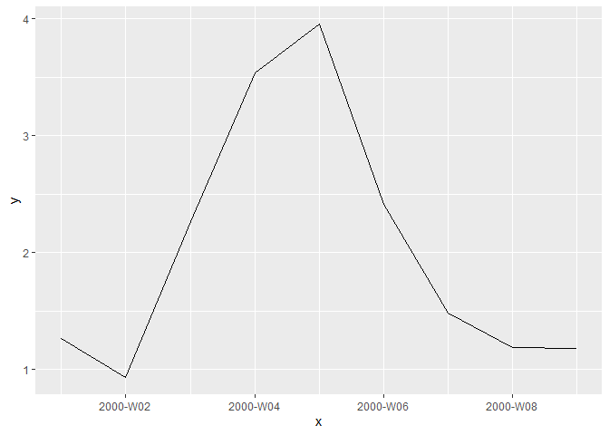

A class for week numbers, according to ISO 8601.
Examples
Coercion to the week number class:
library(weeknumber)
as_weeknumber(c(-1:1, 51:52, NA))
#> <weeknumber[6]>
#> [1] 1999-W52 2000-W01 2000-W02 2000-W52 2001-W01 <NA>
as_weeknumber("2000-W01")
#> <weeknumber[1]>
#> [1] 2000-W01
as_weeknumber(as.Date("2000-12-28"))
#> <weeknumber[1]>
#> [1] 2000-W52Make week number object from year and week:
make_weeknumber(2000:2001, 4:5)
#> <weeknumber[2]>
#> [1] 2000-W04 2001-W05
make_weeknumber(2019:2020, 53)
#> <weeknumber[2]>
#> [1] <NA> 2020-W53Get year and week number from an object:
x <- as_weeknumber(c(-1:1, 51:52, NA))
year_week(x)
#> $year
#> [1] 1999 2000 2000 2000 2001 NA
#>
#> $week
#> [1] 52 1 2 52 1 NAPrint a tibble:
set.seed(0)
library(tibble)
d <- tibble(
x = seq(as_weeknumber("2000-W01"), as_weeknumber("2000-W09")),
y = cumsum(rnorm(length(x)))
)
print(d)
#> # A tibble: 9 x 2
#> x y
#> <week> <dbl>
#> 1 2000-W01 1.26
#> 2 2000-W02 0.937
#> 3 2000-W03 2.27
#> 4 2000-W04 3.54
#> 5 2000-W05 3.95
#> 6 2000-W06 2.41
#> 7 2000-W07 1.49
#> 8 2000-W08 1.19
#> 9 2000-W09 1.18Plot with week number scale:
